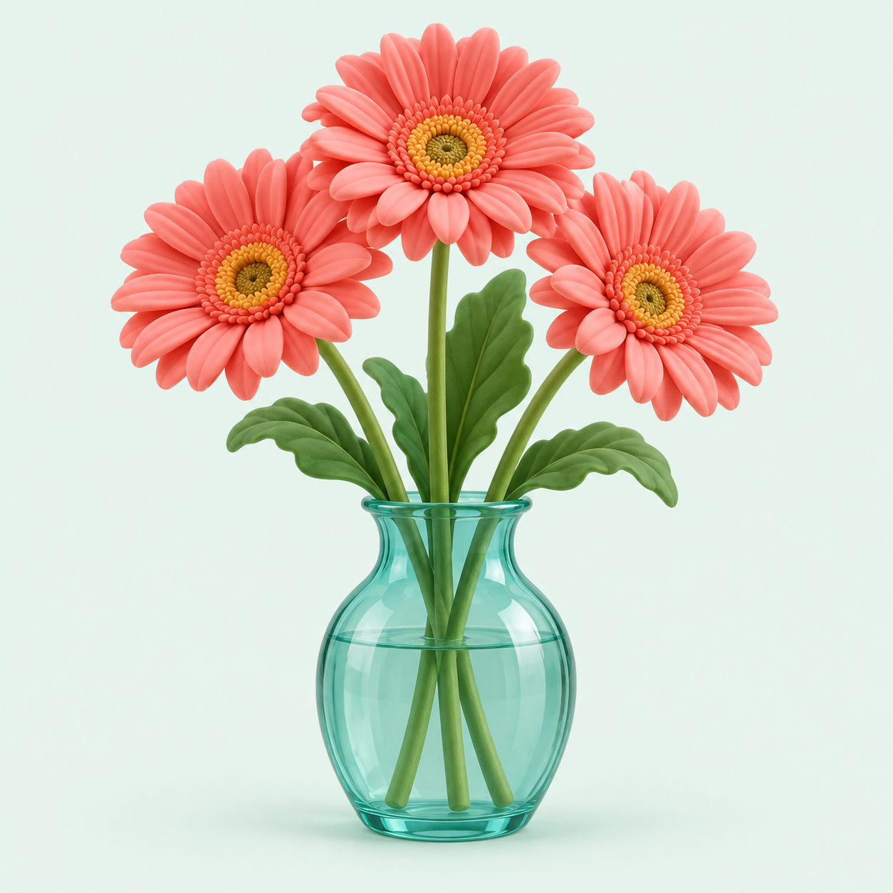

A LITTLE CARE, A LONGER BLOOM
让这束花，多开一会儿。
7 天，14 次小小的选择。把盛放留到最后一天。
你的研究决定 · 不影响游戏分数
你会考虑褪黑素保鲜方案吗？
可以先看证据，也可以保留意见。随时修改，不设标准答案。
尚未选择，也可以直接开始养花。
第 1 / 7 天☀ 温和的一天

今天也请好好照顾我呀YOUR LITTLE FLOWER
初见 · 元气满满
鲜活度100 / 100
今日来信 · 01
你的第一束花，到了。
花已经放进花瓶。先建立养护习惯，再开始你的保鲜小实验。
今天，怎么照顾它？
已选 0 / 2点选两张卡片，再结束今天。
目标：第 7 天结束时，鲜活度达到 60 分。
模拟参考 · 此后不养护（非实验对照）100